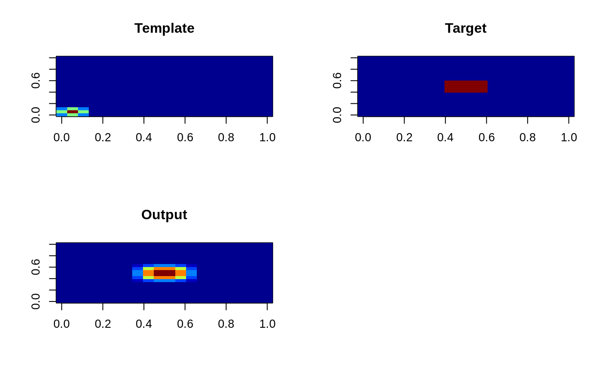

convFFT.RdConvolve a three-dimensinal array with another three-dimensional arry using the Fast Fourier Transform (FFT).
convFFT(A, B, C, FFTA = NULL)| A | is a three-dimensional array (“the template”). |
|---|---|
| B | is a three-dimensional array (“the target”). |
| C | is a vector of length three (the center of “the template”). |
| FFTA | is the three-dimensional Fourier transform of |
A three-dimensional array, the same dimension as the input arrays, that is the convolution of the “target” to the “template” at all spatial locations.
The arrays \(A\) and \(B\) are transformed into the Fourier domain and multiplied together (equivalent to a convolution in the image domain across all spatial locations simultaneously).
Briggs, W.L. and Henson, V.E. (1995) The DFT: An Owner's Manual for the Discrete Fourier Transform, SIAM: Philadelphia.
Brandon Whitcher bwhitcher@gmail.com
cube <- array(0, c(20,20,1))
cube[9:12,9:12,1] <- 1
tkernel <- array(0, c(20,20,1))
tkernel[,,1] <- c(.5, 1, .5, rep(0,20-3)) %o% c(.5, 1, .5, rep(0,20-3))
tcenter <- findCenter(ifelse(tkernel > 0, TRUE, FALSE))
out <- convFFT(tkernel, cube, tcenter)
out[8:13,8:13,1] ## text output
#> [,1] [,2] [,3] [,4] [,5] [,6]
#> [1,] 0.25 0.75 1 1 0.75 0.25
#> [2,] 0.75 2.25 3 3 2.25 0.75
#> [3,] 1.00 3.00 4 4 3.00 1.00
#> [4,] 1.00 3.00 4 4 3.00 1.00
#> [5,] 0.75 2.25 3 3 2.25 0.75
#> [6,] 0.25 0.75 1 1 0.75 0.25
par(mfrow=c(2,2)) ## graphic output
image(drop(tkernel), col=oro.nifti::tim.colors(), main="Template")
image(drop(cube), col=oro.nifti::tim.colors(), main="Target")
image(drop(out), col=oro.nifti::tim.colors(), main="Output")
